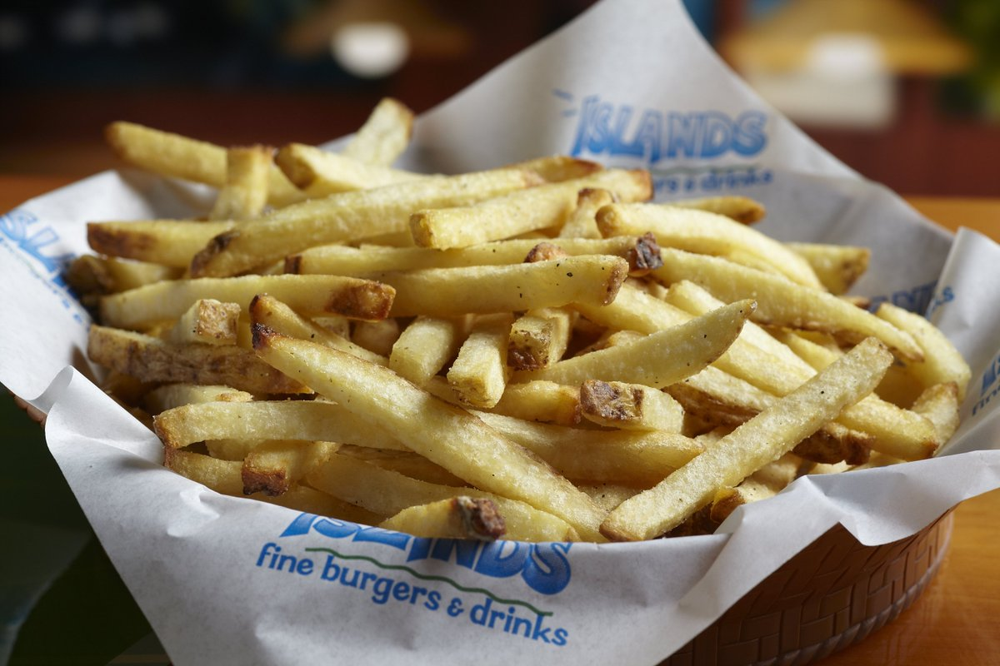

Islands Fries

Ingredients
- Kennebec or Russet potatoes
- 50/50 combination of Peanut and Vegetable oil
Steps
- Cut potatoes in to about 1/2" fries
- Blanch in 325 degree oil for about 3-4 minutes
- Pat fries dry and place in a bowl, then move to fridge to cool down for at least 30 minutes
- Fry again at 350 degree for 6 minutes